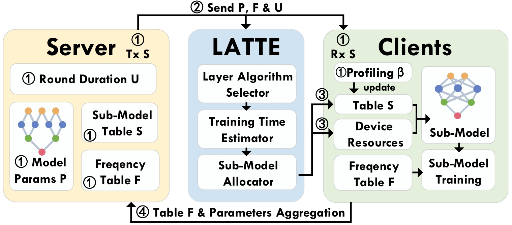

|
Kun Wang (王坤)
I am currently a Postdoctoral Fellow at City University of Hong Kong. I received the Ph.D. degree in 2024 from the Department of Computer Science, City University of Hong Kong (CityU), supervised by Prof. Zhenjiang Li. I also work closely with Prof. Zimu Zhou. Before that, I received the B.E. degree in Software Engineering, from Xidian University (XDU), China, 2020.
My research interests primarily lie in designing and building efficient On-Device AI systems (e.g., in Smartphones and NVIDIA Jetson), including:
(1) Optimizing KV-Cache of On-Device LLM systems.
(2) Building efficient On-Device training systems for Heterogeneous Federated Learning (HFL).
(3) Developing efficient On-Device inference engine for Deep Neural Networks (DNNs).
Email /
Linked In
|

|
|

|
[MobiCom' 24] LATTE: Layer Algorithm-aware Training Time Estimation for Heterogeneous Federated Learning
Kun Wang, Zimu Zhou, Zhenjiang Li
[Paper |
Slides |
Project |
Code]
An efficient training time estimation middleware for accelerating FL system convergence on heterogeneous edge devices.
|
|
|
[TMC' 24] SwapNet: Efficient Swapping for DNN Inference on Edge AI Devices Beyond the Memory Budget
Kun Wang, Jiani Cao, Zimu Zhou, Zhenjiang Li
[Paper |
Slides]
An efficient memory management middleware for DNN inference on mobile edge devices, enabling large models deployment beyond the device memory constraints.
|
|
|
[MobiCom' 23] A Workload-Aware DVFS Robust to Concurrent Tasks for Mobile Devices
Chengdong Lin, Kun Wang, Zhenjiang Li, Yu Pu
[Paper |
Slides |
Project |
Code]
An efficient power governor for scaling processor's frequency in concurrent tasks scenarios on mobile edge devices.
|
Other Publications
-
[TMC' 25] Towards Accurate Training Time Estimation for On-Device Heterogeneous Federated Learning
Kun Wang, Zimu Zhou, Zhenjiang Li
-
[IPSN' 24 Poster] Enhancing Human Motion Sensing with synthesized Millimeter-Waves
Xiaotong Zhang, Kun Wang, Zhenjiang Li, Jin Zhang
-
[TMC' 24] Practical Gaze Tracking on Any Surface with Your Phone
Jiani Cao, Jiesong Chen, Chengdong Lin, Yang Liu, Kun Wang, Zhenjiang Li
|
Teaching Assistant
- [CS2310] Computer Programing, 2024 Spring, CityU
- [CS2310] Computer Programing, 2023 Spring, CityU
- [CS2310] Computer Programing, 2022 Spring, CityU
- [CS2204] Fundamentals of Internet Application Development, 2023 Fall, CityU
|
Professional Services
TPC Member:
Invited Reviewer for:
- ACM MobiCom, 2025
- ACM SenSys, 2024-25
- ACM/IEEE IPSN, 2024
- ACM/IEEE IWQoS, 2023-24
- ACM IoTDI, 2022,2024
- IEEE INFOCOM, 2022-25
- IEEE ICDCS, 2023-24
- IEEE Transactions on Mobile Computing (TMC)
- ACM Transactions on Computer Systems (TOCS)
|
Selected Honors & Awards
- AIoTSys Rising Star, 2025
- Postgraduate Scholarship, CityU, Hong Kong, 2020-2024
- National Scholarship, Ministry of Education, China, 2019
- National Scholarship, Ministry of Education, China, 2018
- The Second Prize Scholarship, Xidian University, China, 2017
|
Recent Talks
- "Towards Accurate Training Time Estimation for On-Device HFL", AIoTSys Rising Star Forum, Aug 2025
- "Towards Accurate Training Time Estimation for On-Device HFL", Invited Talk by CCF, CCF-Talk (Issue 8), May 2025
- "Towards Accurate Training Time Estimation for On-Device HFL", Invited Talk by Flower Labs, Flower Monthly, April 2025
- "Resource Efficient Mobile Edge Computing", Seminar, Xidian University, Oct 2024
|
Last updated Nov 2024
Thanks to Jon Barron for sharing the code of his personal webpage
|
|